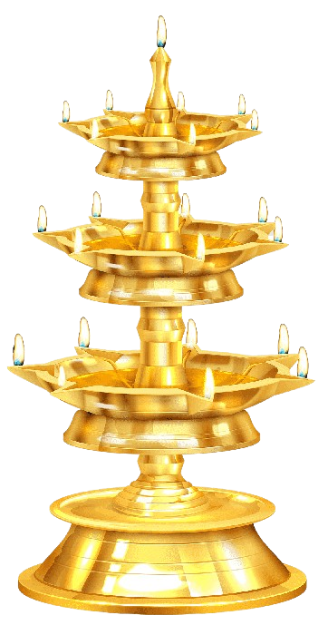
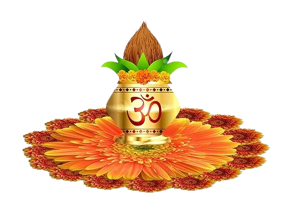
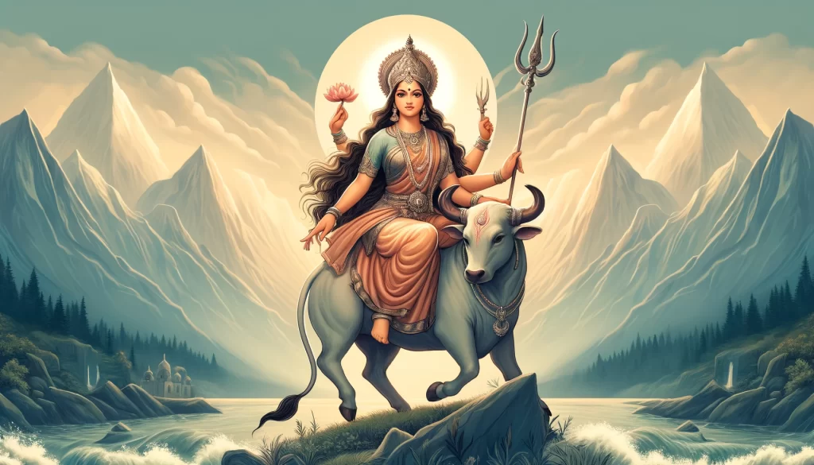
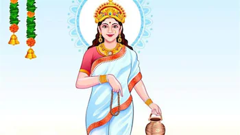
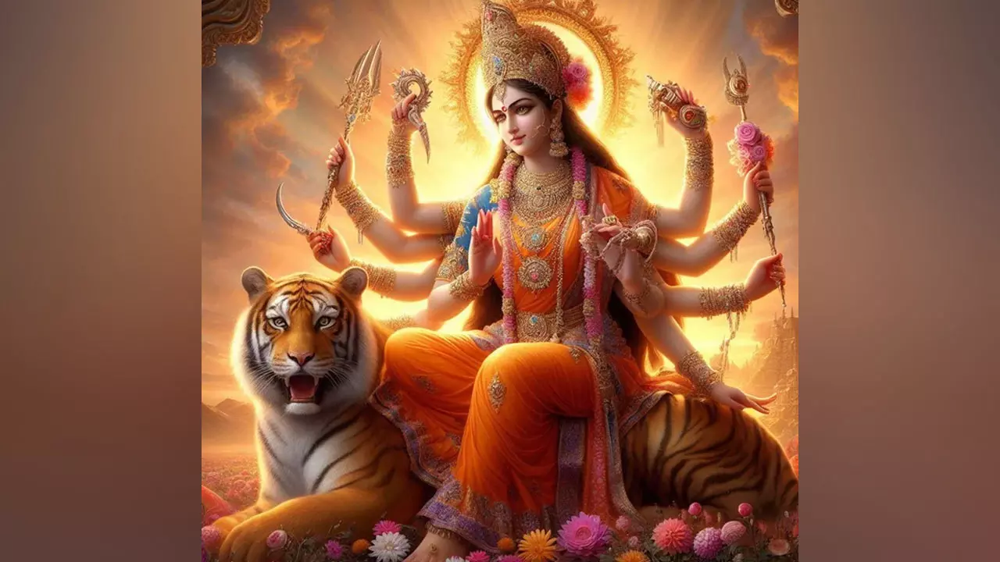
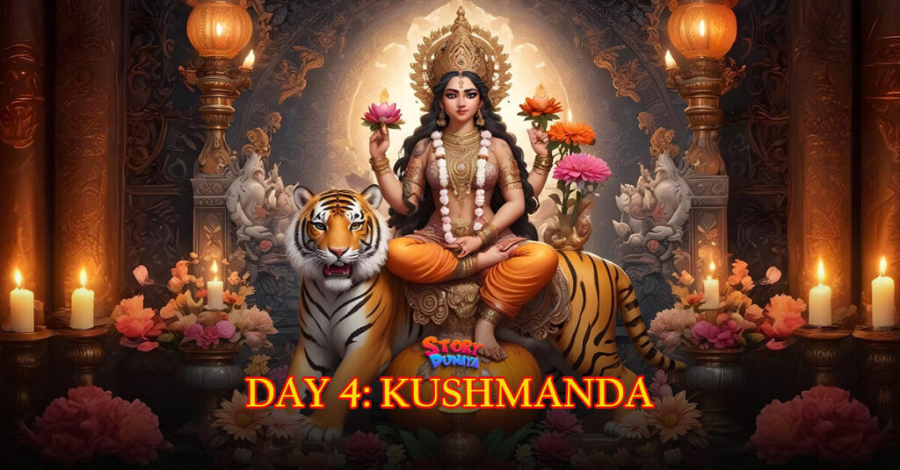
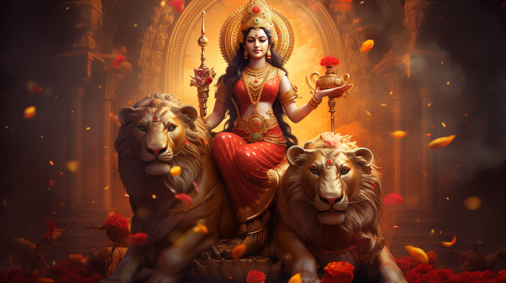
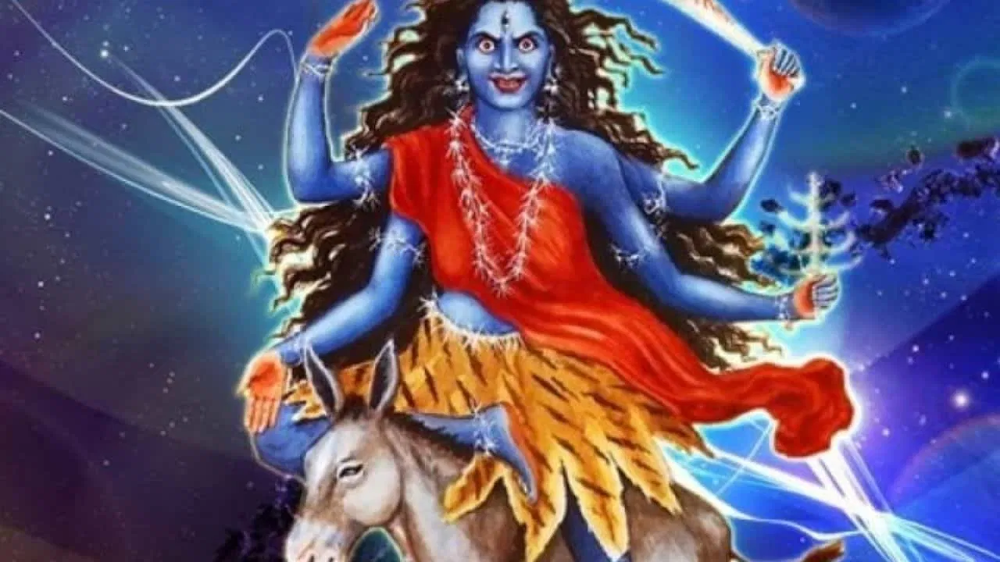
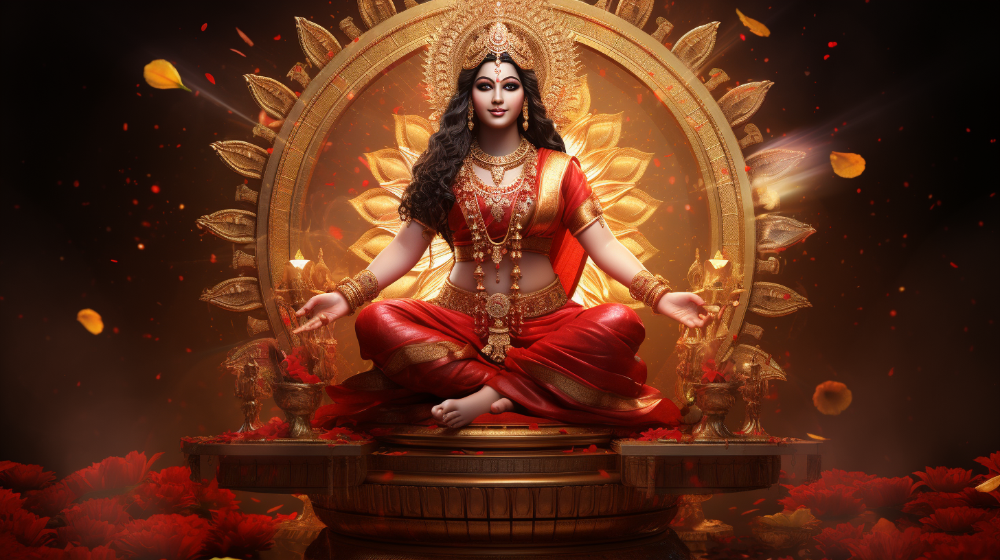
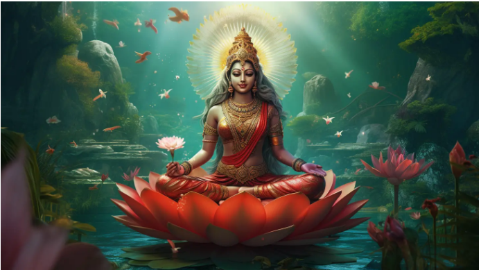

Happy Navratri
 
;
Jay Mata Di
Details in Navratri
| Mata Name | Images | Details |
|---|---|---|
| शैलपुत्री |  | नवरात्रि के प्रथम दिन मां के शैलपुत्री स्वरूप की उपासना होती है. |
| ब्रह्मचारिणी |  | मां ब्रह्मचारिणी का रूप मां ब्रह्मचारिणी का रूप मन को मोह लेने वाला है। |
| चंद्रघंटा |  | मां दुर्गाजी की तीसरी शक्ति का नाम चंद्रघंटा हैं। |
| कूष्मांडा |  | नवरात्र में चौथे दिन की अधिष्ठात्री देवी मां कूष्मांडा हैं। |
| स्कंदमाता |
 |
नवरात्रि के पांचवे दिन स्कंदमाता की पूजा की जाती है। |
| कात्यायिनी |  | मां दुर्गा की छठी शक्ति मां कात्यायनी को समर्पित है। |
| कालरात्रि |  | चैत्र नवरात्र के सातवें दिन मां कालरात्रि की पूजा करने का विधान है। |
| महागौरी |  | नवरात्रि के आठवें दिन महागौरी का पूजन-आराधना कल्याणकारी है। |
| सिद्धिदात्री |  | दुर्गा माता के नौवें स्वरूप माँ सिद्धिदात्री का दिन है नौवां दिन। |
Created By Ananya Singh Thakur....